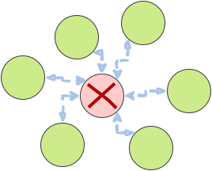

<!DOCTYPE html>
<html lang="en">

<head>
  <meta charset="utf-8" />
  <meta name="viewport" content="width=device-width, initial-scale=1.0, maximum-scale=1.0, user-scalable=no" />

  <title>Peer-to-Peer (P2P) Networking</title>
  <link rel="shortcut icon" href="./../../assets/favicon.ico" />
  <link rel="stylesheet" href="./../../dist/reset.css" />
  <link rel="stylesheet" href="./../../dist/reveal.css" />
  <link rel="stylesheet" href="./../../assets/styles/PBA-theme.css" id="theme" />
  <link rel="stylesheet" href="./../../css/highlight/shades-of-purple.css" />

  <link rel="stylesheet" href="./../.././assets/styles/custom-classes.css" />

</head>

<body class="site">
  <header class="site-header">
    <!-- This logo is a link only on the watching server, not the production build -->
      
  </header>
  <main class="reveal">
    <article class="slides">
      <section  data-markdown><script type="text/template">

# Peer-to-Peer Networking
</script></section><section  data-markdown><script type="text/template">
## Introduction/Agenda

- Discuss the network layer and network conditions that blockchains operate on(Mostly)
- Talk about traditional web2 network overlays pros vs cons with web3 network overlays
- Discuss attacks and how to address along with the underlying threat model
- Libp2p
</script></section><section  data-markdown><script type="text/template">
## Centralized vs Decentralized Networks

<aside class="notes"><p>2.) Not all p2p clients must run the same software they can develop their own (BTC, Ethereum etc...) Further decentralization.</p>
</aside></script></section><section  data-markdown><script type="text/template">
## Advantages to Decentralized Networks

- No privileged nodes
- Less bottlenecks with bandwidth
- DOS resistent
- No centralized infrastructure necessary(Except internet for now...)

<aside class="notes"><ol>
<li>No single node or nodes(CDN) have access to all of the content or files or is critical for operating the network. Each node has a copy of the data.</li>
<li>No central node carrying all of the load of traffic. Block production and Block peering/importing can be mentioned here</li>
<li>Difficult to overload the network or DOS (Not single node is privileged)</li>
<li>Although many nodes are run on Centralized cloud compute platforms they don&#39;t have to be(Typically)</li>
</ol>
</aside></script></section><section  data-markdown><script type="text/template">
## Difficulties or Disadvantages

- Since it is permissionless a node can share malicious resources
- Latency
- Difficult to regulate illicit activity
- The network is limited by nodes with the weakest hardware

<aside class="notes"><ol start="2">
<li>Latency may be an issue if we need to wait for many peers to receive the data produced from a single node since everyone may not have a direct connection mention finality time!</li>
<li>No central point to go and snoop all users data(for better or for worse)</li>
<li>Why we have hardware requirements for blockchain networks</li>
</ol>
</aside></script></section><section  data-markdown><script type="text/template">
## Initial Discovery

- Bootnode/bootnodes (More on this later in Substrate)

<aside class="notes"><p>1.) Must know someone who is participating in the network initially(Bootnode)</p>
</aside></script></section><section ><section data-markdown><script type="text/template">
## Gossip Protocol


<aside class="notes"><ul>
<li>Talk about how we have and want block 45 being peered to others</li>
</ul>
</aside></script></section><section data-markdown><script type="text/template">
## Gossip Protocol


<aside class="notes"><p>Talk about advertising vs just blind sending and how that can be inefficient</p>
</aside></script></section></section><section  data-markdown><script type="text/template">
## Discovery

<pba-flex center>

1. Connect to a peer
1. Ask peer for a list of their known nodes(Addresses to fill DHT)
1. Connect to random subset of peers from the list
1. Repeat steps 2 and 3

</pba-flex>
</script></section><section ><section data-markdown><script type="text/template">
## Partitions


<aside class="notes"><p>Talk about how when a partition happens in P2P vs Centralized
In p2p only one node needs to have a full copy in order for the file to
be able to be distributed across the network</p>
</aside></script></section><section data-markdown><script type="text/template">
## Partitions



<aside class="notes"><ol>
<li>This is horrible and means all nodes are totally screwed</li>
</ol>
</aside></script></section></section><section ><section data-markdown><script type="text/template">
## Attacks

<aside class="notes"><p>Show picture of something scary and devious here</p>
</aside></script></section><section data-markdown><script type="text/template">
## Eclipse Attack


<aside class="notes"><ol>
<li>Distorts view of the healthy normal honest state of the network</li>
<li>Transaction confirmations can be fictions</li>
</ol>
</aside></script></section><section data-markdown><script type="text/template">
## Eclipse Attack Execution

<pba-flex center>

1. Flood a target node with a bunch of malicious peer addresses
1. The targeted node then stores these malicious peers and utilizes them when re-syncing on next bootup
1. DOS targeted node to take it offline to force a resync with these new malicious peers

</pba-flex>
</script></section><section data-markdown><script type="text/template">
## Preventing Attacks

<pba-flex center>

- Restrict inbound connections in some way
- Random selection of peers to connect with
- Deterministic node selection. (Bootnodes)
- Restricting new nodes (Probably not what we want...)

</pba-flex>

<aside class="notes"><ol>
<li>Be wary of new connections with other nodes<br/></li>
<li>Don&#39;t just take the most recent request for connections to avoid the flooding<br/></li>
<li>Bootnodes with higher credibility and trust (Can be a bottleneck) - Rotate bootnodes they are subject as well to attacks and should be rotated</li>
</ol>
</aside></script></section></section><section  data-markdown><script type="text/template">
## libp2p

<pba-flex center>

- Toolbox for developing systems built on top of the p2p networking
- Simply put helpful in establishing encrypted and authenticated channels between two peers

</pba-flex>

<aside class="notes"><p>What is libp2p</p>
</aside></script></section><section  data-markdown><script type="text/template">
## Addressing(MultiAddress)

<pba-flex center>

- Generalization of an IP
- Multiaddress is to an IP address what a transport is to TCP/IP
- EX
- `/ip4/127.0.0.1/tcp/30333`
- `/dns/example.com/udp/5015/quic`
- `/ip6/fe80::0202:b3ff:fe1e:8329/tcp/10350/ws`

</pba-flex>

<aside class="notes"><p>Show example here, it is important for looking at chain-spec</p>
</aside></script></section><section  data-markdown><script type="text/template">
## Protocols<br/>(Generic Protocol Negotiation)

- You can change your encryption protocol via the protocol negotiation!
- Ping
- Identify

<aside class="notes"><ol>
<li>ProtocolIds to differentiate<br/></li>
<li>Health checks to check the liveness of a node is it even online?<br/></li>
<li>Peers exchange information about each other such as public keys and known addresses</li>
</ol>
</aside></script></section><section ><section data-markdown><script type="text/template">
## KAD-DHT

- Simply put a hash table containing a set of data entries these data entries are distributed across the network
- There is no central registry where to obtain everything
- When we want some piece of data offered by the network we search for its distance to specific peers
</script></section><section data-markdown><script type="text/template">
## DHT Operations in libp2p

- `FIND_NODE`: given a key, find the closest nodes to the key
- `PUT_VALUE`: add a `key-value` mapping to the DHT
- `GET_VALUE`: given a key, retrieve the value
- `ADD_PROVIDERS`: advertising in the network that a peer is providing a given key
- `GET_PROVIDERS`: finding out what peers can provide the value for a specified key
</script></section><section data-markdown><script type="text/template">
## Example Findkey(k=Block45)


</script></section></section><section  data-markdown><script type="text/template">
## Peers

```rust
// PeerId
/ip4/7.7.7.7/tcp/4242/p2p/QmYyQSo1c1Ym7orWxLYvCrM2EmxFTANf8wXmmE7DWjhx5N
```

```rust
// PeerInfo
struct Peerinfo<PeerId, Others> {
    peer_id: PeerId,
    other_multiaddresses: Others // Others is a type which is a Set
}

// PeerStore
```

<aside class="notes"><ol>
<li>You can encapsulate a p2p address into a new multi address to provide enough info to dial a peer over TCP!<br/></li>
<li>Set of multiaddresses a particular peer is listening on<br/></li>
<li>Table of peer keys and addresses and associated metadata like an address book. Universal multiaddress book.</li>
</ol>
</aside></script></section><section  data-markdown><script type="text/template">
## Transports

<pba-flex center>

- TCP
- UDP
- QUIC and more...

</pba-flex>

<aside class="notes"><ol start="2">
<li>Generally for p2p connections we need ordering though so UDP alone doesn&#39;t work for everything<br/></li>
<li>Ordering built on udp</li>
</ol>
</aside></script></section><section  data-markdown><script type="text/template">
## Stream Multiplexing

<aside class="notes"><p>Very Brief overview.</p>
</aside></script></section><section ><section data-markdown><script type="text/template">
## Security and Maliciousness

From Game theory...<br/>
Just because a particular type of attack is theoretically possible/feasible does not mean that it is practical...
</script></section><section data-markdown><script type="text/template">
## Identity and Trust

<pba-flex center>

- Every node has an public private key pair or `PeerId`.
- Authorization is NOT default.

</pba-flex>

<aside class="notes"><ol>
<li>Allows to verify who we are talking too.</li>
<li>Some systems may not require any authorization from a peer you can think of this as a tuning on permission...</li>
</ol>
</aside></script></section><section data-markdown><script type="text/template">
## Reputation systems

<pba-flex center>

- Blacklist IP
- Duplicate messages
- Connections with high reputation nodes,<br/>_Any issues with this?_

</pba-flex>

<aside class="notes"><ol>
<li>Identify bad actors we use reputation in Substrate</li>
<li>People may be malicious and spam us with duplicate data</li>
<li>Try to maintain connections with the nodes that have the highest reputation (With some randomness to allow new nodes to join)</li>
</ol>
</aside></script></section></section><section ><section data-markdown><script type="text/template">
## DOS

<pba-flex center>

- KAD-DHT are vulnerable to sybil attacks.
- Querying
- Targeting of specific keys(Block 42)
- Do this by generating Ids close to the target key based on the DHT distance metric

</pba-flex>

<aside class="notes"><p>2.) A DHT query may need to be routed through several peers before the query is fulfilled.(Those peers can be malicious and attempt to lie)</p>
<p>3.) If a malicious actor wants to target a specific key they can improve their chances of being in the lookup path. By spinning up nodes next to the nodes providing a specific key based on the DHT distance metric</p>
</aside></script></section><section data-markdown><script type="text/template">
## Sybil Attacks

<pba-flex center>

- Sybil attacks are hard to defend against and<br/>precautions can be taken at the application level to mitigate<br/>
  (Proof of work perhaps?)

</pba-flex>

<aside class="notes"><ol>
<li>So even though we might be receiving malicious blocks we can identify that by verifying that block is valid and edit reputation accordingly</li>
</ol>
</aside></script></section><section data-markdown><script type="text/template">
## S/Kademlia paper in libp2p

<pba-flex center>

- Query multiple disjoint lookup paths<br/>
  (Paths which don't share any routing peers)<br/>
  _in parallel_

</pba-flex>
</script></section></section><section  data-markdown><script type="text/template">
## Additional Resources

<pba-flex center>

- https://curriculum.pl-launchpad.io/curriculum/libp2p/
- https://docs.libp2p.io/concepts/

</pba-flex>
</script></section><section  data-markdown><script type="text/template">
<!-- .slide: data-background-color="#4A2439" -->

# Questions
</script></section>
    </article>
  </main>

  <script src="./../../dist/reveal.js"></script>

  <script src="./../../plugin/markdown/markdown.js"></script>
  <script src="./../../plugin/highlight/highlight.js"></script>
  <script src="./../../plugin/zoom/zoom.js"></script>
  <script src="./../../plugin/notes/notes.js"></script>
  <script src="./../../plugin/math/math.js"></script>
  <script>
    function extend() {
      var target = {};
      for (var i = 0; i < arguments.length; i++) {
        var source = arguments[i];
        for (var key in source) {
          if (source.hasOwnProperty(key)) {
            target[key] = source[key];
          }
        }
      }
      return target;
    }

    // default options to init reveal.js
    var defaultOptions = {
      controls: true,
      progress: true,
      history: true,
      center: true,
      transition: 'default', // none/fade/slide/convex/concave/zoom
      slideNumber: true,
      plugins: [
        RevealMarkdown,
        RevealHighlight,
        RevealZoom,
        RevealNotes,
        RevealMath
      ]
    };

    // options from URL query string
    var queryOptions = Reveal().getQueryHash() || {};

    var options = extend(defaultOptions, {"width":1400,"height":900,"margin":0,"minScale":0.2,"maxScale":2,"transition":"none","controls":true,"progress":true,"center":true,"slideNumber":true,"backgroundTransition":"fade"}, queryOptions);
  </script>


  <script>
    Reveal.initialize(options);
  </script>
</body>

</html>
